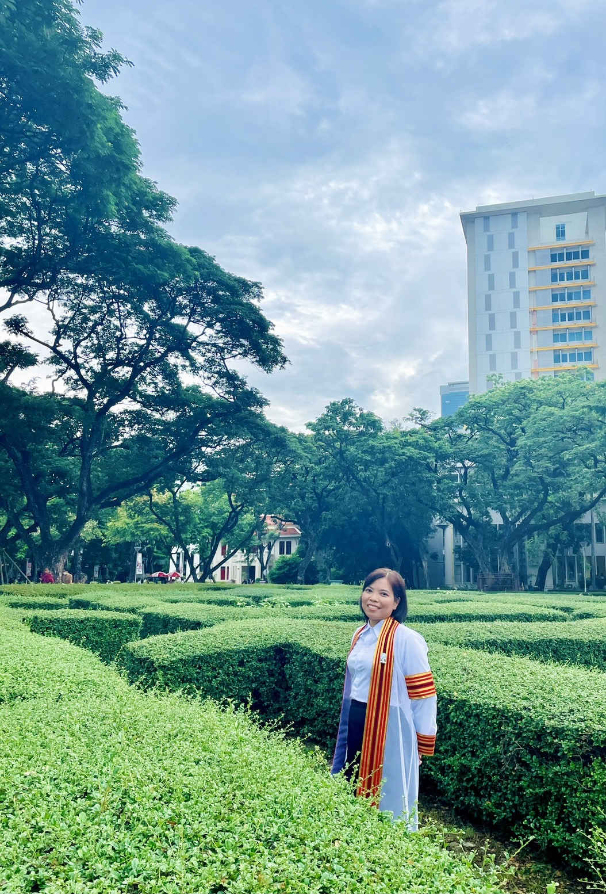

About Me

Currently, I am working as a Postdoctoral Researcher at the Wireless and Future Internet Unit within the Department of Electrical Engineering at Chulalongkorn University. My primary focus is on road traffic data analysis and traffic signal control. In this role, I investigate advanced methodologies for analyzing urban traffic patterns, optimizing traffic signal timings, and developing intelligent transportation systems. My research aims to improve traffic flow, reduce congestion, and enhance the efficiency of urban mobility through data-driven insights and innovative control strategies. Additionally, I am dedicated to addressing environmental concerns by working on projects aimed at reducing greenhouse gas emissions associated with traffic. By integrating sustainable practices into traffic management, we strive to create a more environmentally friendly and efficient transportation network.
Feel free to explore my work on this page!
Below is a summary of my educational background:
- Ph.D. in Electrical Engineering - Chulalongkorn University, Bangkok, Thailand (2020)
- Master of Computer Science (M.C.Sc) - University of Computer Studies (Mandalay), Myanmar (2009)
- Bachelor of Computer Science (B.C.Sc, Hons) - University of Computer Studies (Mandalay), Myanmar (2005)
- Bachelor of Computer Science (B.C.Sc) - University of Computer Studies (Mandalay), Myanmar (2004)
Back to Home
- Ei Ei Mon, Myint Myint Thein, and May Thu Aung. "Clustering Based on Task Dependency for Data-Intensive Workflow Scheduling Optimization." 2016 9th Workshop on Many-Task Computing on Clouds, Grids, and Supercomputers (MTAGS). IEEE, 2016.[pdf]
- Ei Ei Mon, H. Ochiai, C. Saivichit, and C. Aswakul. (2019, June). "Traffic Anomaly Classification by Support Vector Machine with Radial Basis Function on Chula-SSS Urban Road Network." In Proceedings of 9th International Workshop on Computer Science and Engineering, WCSE (pp. 15-17).[pdf]
- Ei Ei Mon, H. Ochiai, C. Saivichit, and C. Aswakul. (2019, August). "Recurrent and Non-Recurrent Congestion Based Gridlock Detection on Chula-SSS Urban Road Network." In SUMO (pp. 158-171).[pdf, slide]
- Ei Ei Mon, H. Ochiai, C. Saivichit, and C. Aswakul. (2020). "Bottleneck Based Gridlock Prediction in an Urban Road Network Using Long Short-Term Memory." Electronics, 9(9), 1412.[pdf]
- C. Eosanurak, N. Wongtrakoon, Ei Ei Mon, and C. Aswakul. (2020). "Computer Simulation Study of Vehicle Type Classification Using Machine Learning Techniques with Mobile Phone Location Data." In SUMO User Conference.[pdf, presentation]
- T. Konghun, N. Visavarungroj, K. Saengkaenpetch, M. Homchan, Ei Ei Mon, and C. Aswakul. (2022, January). "IoTcloudServe@ TEIN Establishment of Kubernetes Cloud for Road Traffic Signal Control Application Using Reinforcement Learning." In The 14th Regional Conference on Electrical and Electronics Engineering (RC-EEE 2021) (p. 116).[pdf]
- Ei Ei Mon, H. Ochiai, P. Komolkiti, and C. Aswakul. (2022). "Real-World Sensor Dataset for City Inbound-Outbound Critical Intersection Analysis." Scientific Data, 9(1), 357. [pdf, code, dataset]
- Ei Ei Mon, H. Ochiai, and C. Aswakul. (2024). "Application of Traffic Light Control in Oversaturated Urban Network Using Multi-Agent Deep Reinforcement Learning." IEEE Access.[pdf]
- DO Akindoye, Ei Ei Mon, C. Aswakul. (2024). Assessment of Greenhouse Gas Emission Reduction Potential through Transition from Gasoline-Powered to Electric Motorcycles by using SUMO: Preliminary Case Study of Sathorn Area in Bangkok. International Energy Journal. 2024 Dec 1;24(4).[pdf]
- S. Moorthi, Ei Ei Mon, C. Aswakul. (2025). Enhancing Energy Efficiency in Kubernetes Cluster Through Resource and Energy Aware Scheduling. In2025 22nd International Conference on Electrical Engineering/Electronics, Computer, Telecommunications and Information Technology (ECTI-CON) 2025 May 20 (pp. 1-6). IEEE.[pdf
Back to Home
Here is a list of certifications I have obtained:
- Diploma in Java Programming Course - (May-Oct 2011)
- Associate HCTA0-003 - (June 2024)
- Certified Kubernetes Administrator (CKA) - (July 2024)
Back to Home
Below are some of the awards and recognitions I have received:
- PhD Sandwich Program AUN/SEED-Net Scholarship, JICA - 2017-2020
- Short-Term Study Program in Japan (SSJP), The University of Tokyo- 2019
- Second Century Fund (C2F) Postdoctoral Fellowship, Chulalongkorn University, Thailand - 2022
Back to Home
- Former Tutor, Computer University (Taunggyi), 2007 - 2009
- Former Tutor, Computer University (Mandalay), 2009 - 2012
- Former Assistant Lecturer, India-Myanmar Centre for Enhancement of Information Technology Skills (IMCEITS), Information and Communication Technology Research Centre (ICTRC), 2012 - 2015
- Former Lecturer, University of Computer Studies (Mandalay), 2015 - 2018
- Former Lecturer, University of Computer Studies (Taunggyi), 2018 - 2020
- Researcher, "Rama IV Model": A traffic problem solution and management project for Rama IV road, 2020 - 2022
Back to Home
- Electrical Engineering Postgraduate Student Association (EEPSA) - Actively involved in activities to support the community.
- The Mirror Foundation - Participated as a one-day volunteer, contributing to community service initiatives.
Back to Home